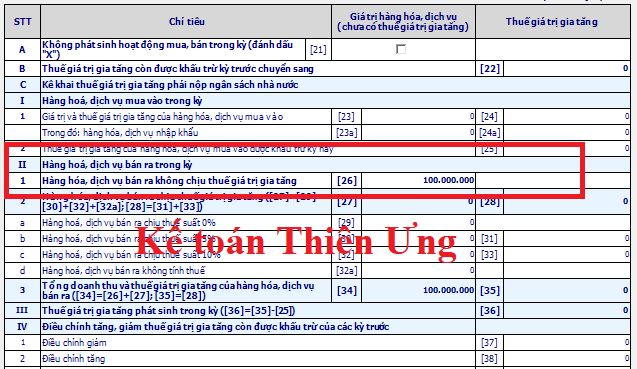
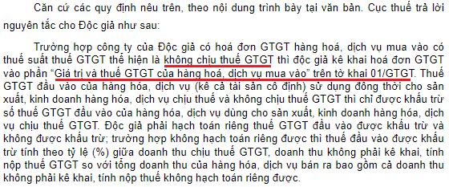

Hóa đơn mua vào không chịu thuế GTGT có kê khai không? Hướng dẫn cách kê khai hóa đơn không chịu thuế GTGT (Kê khai hóa đơn đầu ra - đầu vào) chi tiết từng trường hợp.
- Việc kê khai các hoá đơn đầu ra, đầu vào không chịu thuế GTGT như thế nào, chắc không phải bạn kế toán nào cũng làm tốt việc này. Phần này Công ty TNHH Tư vấn & Đào tạo Diệu Tâm xin hướng dẫn cách kê khai hoá đơn không chịu thuế chi tiết cả bên mua và bên bán.
1. Cách kê khai hoá đơn đầu ra không chịu thuế GTGT:
- Kê khai Doanh thu vào Chỉ tiêu 26 trên Tờ khai thuế 01/GTGT.

Nếu chỉ sản xuất kinh doanh hàng hóa dịch vụ không chịu thuế GTGT:
Theo Công văn 4943/TCT-KK ngày 23 tháng 11 năm 2015 của Tổng cục thuế:
“Người nộp thuế GTGT là tổ chức, cá nhân sản xuất, kinh doanh hàng hóa, dịch vụ chịu thuế GTGT (sau đây gọi là cơ sở kinh doanh) và tổ chức, cá nhân nhập khẩu hàng hóa chịu thuế GTGT (sau đây gọi là người nhập khẩu).”
Căn cứ hướng dẫn trên, trường hợp người nộp thuế chỉ sản xuất kinh doanh hàng hóa dịch vụ không chịu thuế GTGT thì không phải kê khai, nộp thuế GTGT. Trường hợp nếu phát sinh bán hàng hóa dịch vụ thuộc đối tượng chịu thuế GTGT (ví dụ: thanh lý tài sản,…) thì người nộp thuế sử dụng hóa đơn của cơ quan thuế và nộp thuế theo quy định."
Xem thêm: Cách viết hóa đơn hàng không chịu thuế GTGT
Tại chuyên mục hỏi đáp trên Cổng thông tin điện tử - Bộ tài chính ngày 10/1/2024

Nguồn: https://www.mof.gov.vn/hoidapcstc/home/cthoidap/143180
------------------------------------------------------------------------------------------------------------
2. Cách kê khai hoá đơn đầu vào không chịu thuế GTGT:
Hóa đơn đầu vào không chịu thuế GTGT không phải kê khai:
"Về việc kê khai các hóa đơn của hàng hóa, dịch vụ mua vào không chịu thuế GTGT:
Các hóa đơn của hàng hóa, dịch vụ mua vào thuộc đối tượng không chịu thuế thì không phải kê khai trên bảng kê hóa đơn, chứng từ hàng hóa, dịch vụ mua.
Tổng cục Thuế trả lời để Công ty TNHH MTV Dịch vụ và Thương mại Công nghệ Quả Cam được biết và liên hệ với Cơ quan Thuế quản lý trực tiếp để được hướng dẫn thực hiện./."
(Theo Công văn 4943/TCT-CS ngày 10 /11/2014 của Tổng cục thuế)
Hóa đơn đầu vào là hóa đơn trực tiếp có kê khai:
“Về việc hướng dẫn kê khai đối với hóa đơn bán hàng thông thường:
Hóa đơn bán hàng thông thường (không phải là hóa đơn GTGT) không nên kê vào Bảng kê hóa đơn, chứng từ hàng hóa, dịch vụ mua vào (mẫu 01-2/GTGT) đối với người nộp thuế GTGT theo phương pháp khấu trừ.”
(Theo Công văn 3430/TCT-KK ngày 21/08/2014 của Tổng cục thuế)
--------------------------------------------------------------------------------------
Kế toán Diệu Tâm xin chúc các bạn thành công!